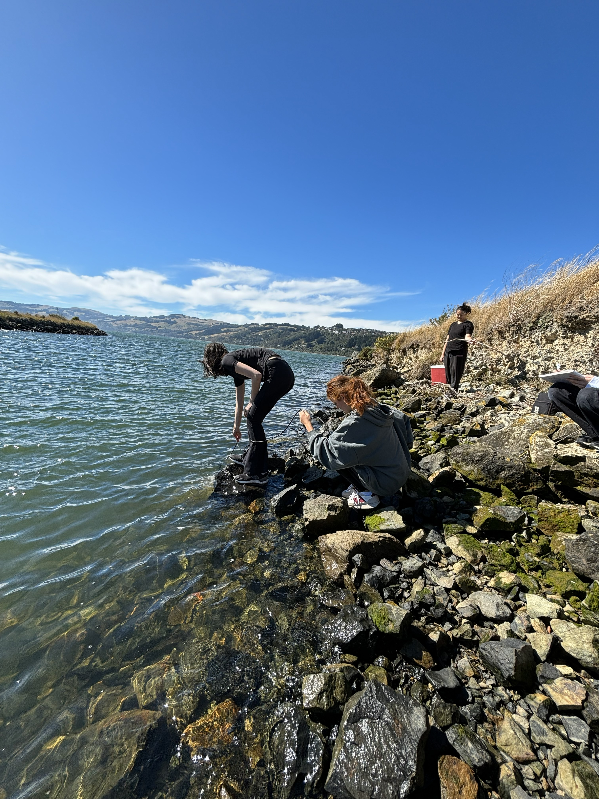
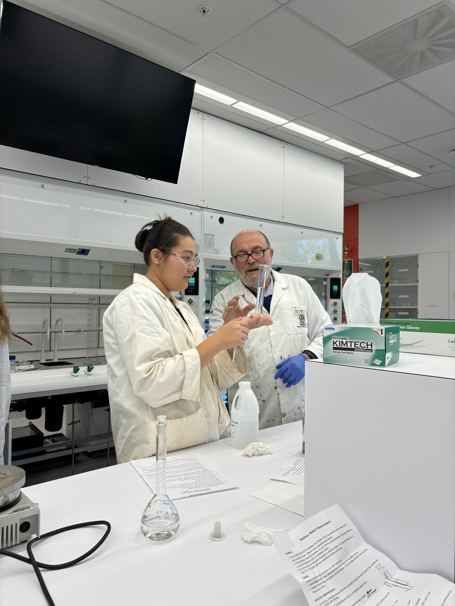
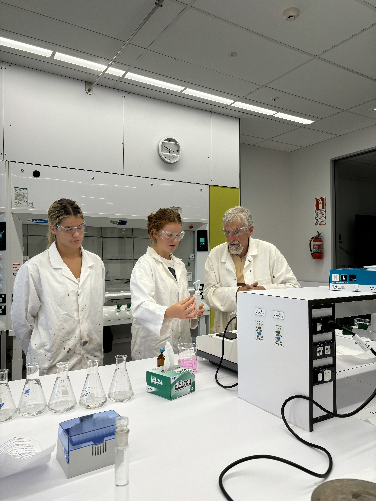
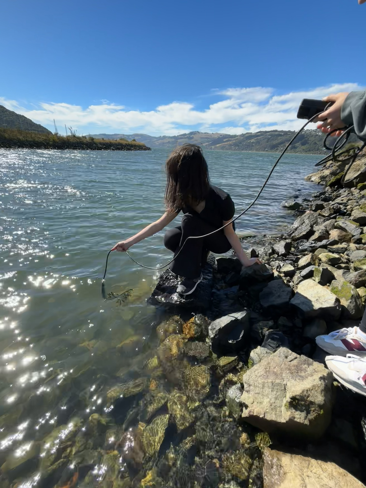
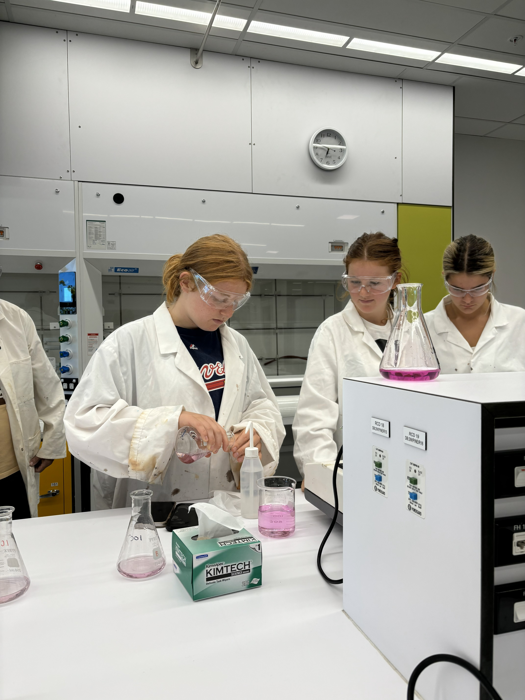
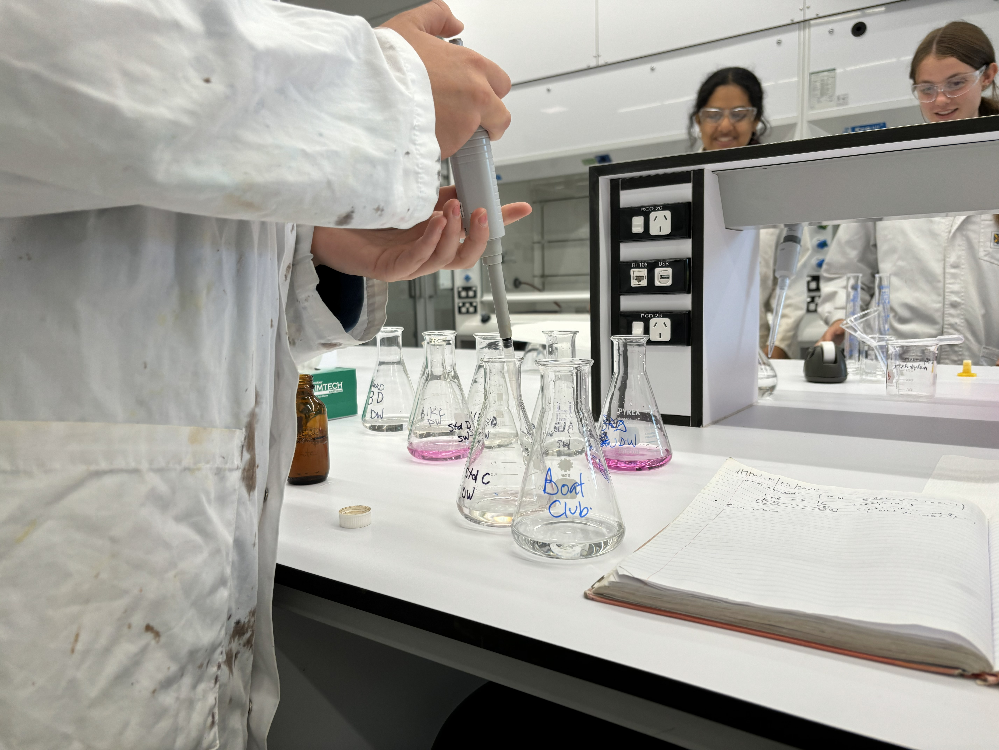

Join the Healthy Harbour Watchers
Healthy Harbour Watchers partners with schools across Dunedin to give students hands-on experience in environmental science. Students participate in real world data collection, learn to conduct water quality assays, and gain valuable lab skills. Our program brings science out of the classroom and into the harbour, empowering young people to explore, measure, and understand their local environment.
Through field trips and lab sessions, students collect samples, analyze results, and contribute to our long-term monitoring of Otago Harbour. It's a unique opportunity to work alongside scientists, develop practical skills, and make a real impact on the health of our waterways.







Healthy Harbour Watchers in the media
Read more about the students, their fieldwork, and what they are learning about Otago Harbour.
- Storms wash pollution into Otago Harbour: young scientists ODT Mix
- Students look into what lurks in the Leith Otago Daily Times
- Young fingers on the pulse Otago Daily Times — coverage of the Otago Conservation Schools Award
- Harbour study leader honoured Otago Daily Times — 2016 community science award coverage
- Dunedin's Healthy Harbour Watchers RNZ Our Changing World
- Harbour watchers return Otago Daily Times — The Star
Get involved
Follow the project or get in touch to find out how your school can take part.